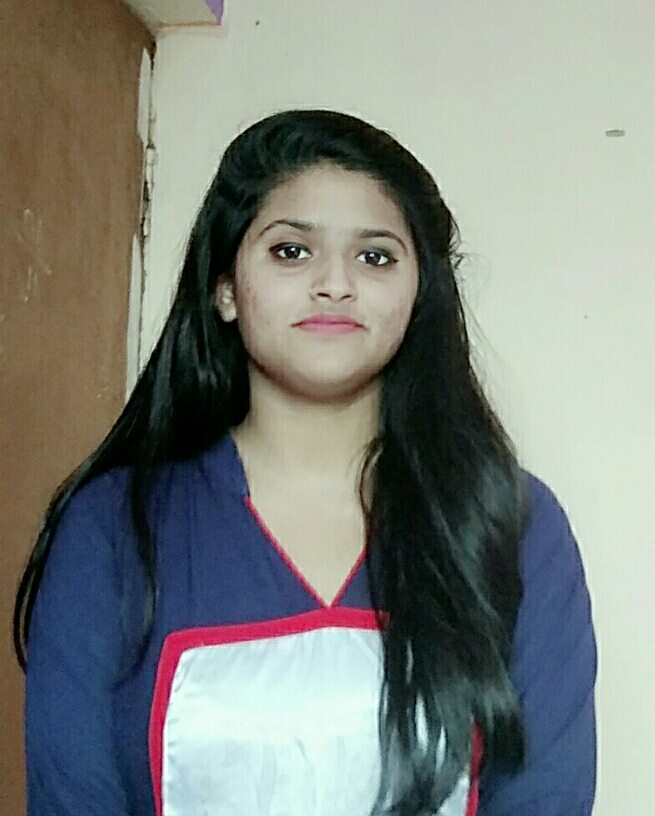

My Resume

About me
I am a Hardworking, Honest individual. I am Good Timekeeper, always willing to learn new skills.
I am friendly, helpful and polite, have a good sense of humour.
I am able to work independently in busy environments and also within a team setting.
Education Qualification
| S. No. |
Class/Degree |
Percentage |
Session |
| 1. |
M Tech (IT E-Security) |
82.455 |
2019-22 |
| 2. |
B.E (Electronics and Telecommunication) |
70.5 |
2014-18 |
| 3. |
12th(Board Name) |
81.5 |
2014 |
| 4. |
10th(CG Board) |
85 |
2012 |
Skills
-
Technical Skills: HTML/CSS, JS ,JAVA, Basic Python and PHP
- Electives: DBMS, OOPS, OS and Computer Network
- Version Control: Git/Github
- Soft Skills: Time Management, Team Leader and Dedicated towards my work
- Others: MS Office, Wordpress Prompt Engineering, English Speaking
Certifications
- MATLAB
- Electronic Maintenance
- Embedded System
- Ethical Hacking
- Web Development
Projects
- Some HML/CSS Projects
- Portfolio using HTML/CSS
- Website using HTML/CSS
- Amazon clone using HTML/CSS
- Tic Tac Toe Game using HTML/CSS and JS
- Stone Paper Scissors Game using HTML/CSS and JS
- Snake Game using Java Lnguage
My Personal Information
- My Name: Divya Soni
- My contact No: 7089879588
- My email: divyasoni.140697@gmail.com
- My social Media links:
- My Hobbies are:
- Art & Craft, Book Reading, Travelling and Exporing new things in life
- Also interested in Cooking
- Carrom and Badminton